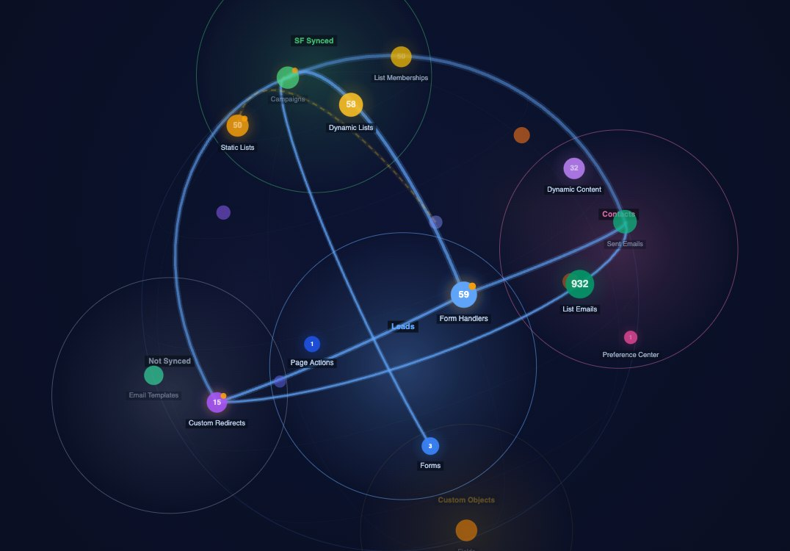
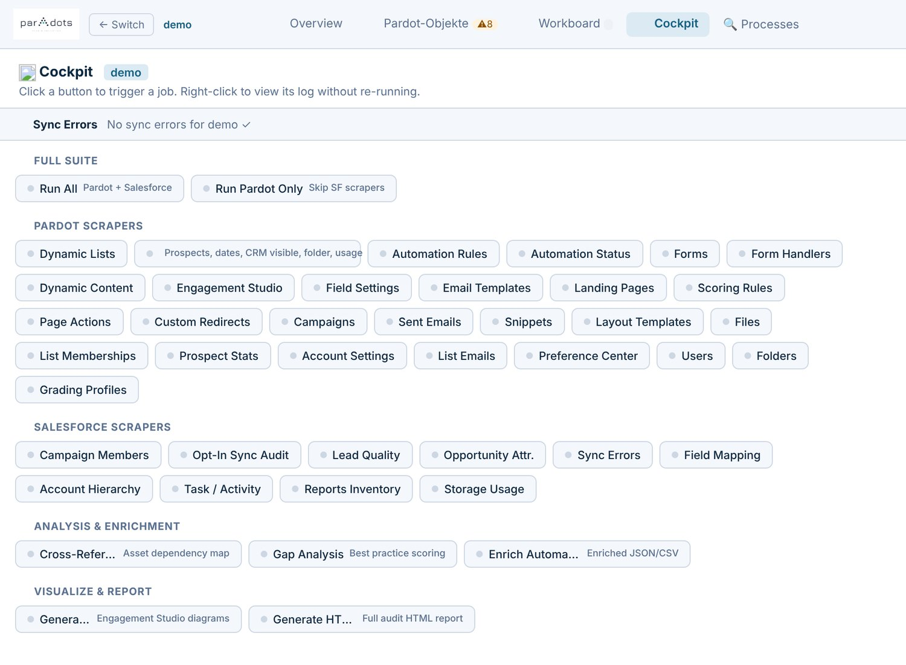
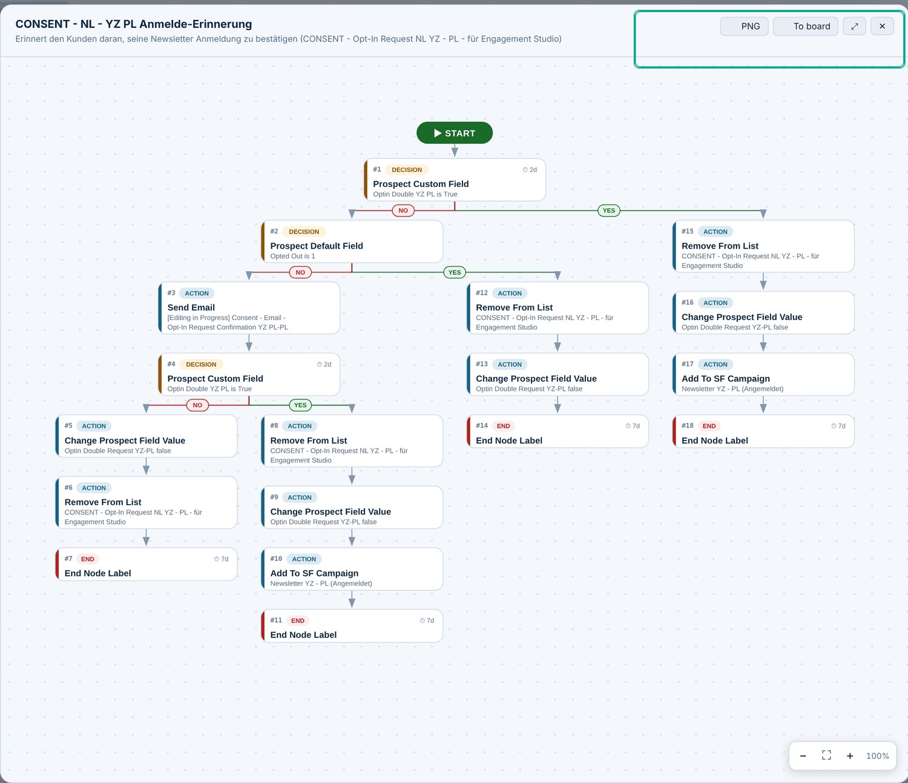

parAdots was built around the jobs that eat the most time and carry the most risk.
You inherit an org you have never seen. Someone built it over five years and documented none of it; the real architecture lives across a thousand screens.
Walk in blind on Monday, present a findings-backed picture of the org by end of day one.

Live orgs drift. Paused automations pile up, fields get retired out from under dynamic content, and prospect-sync errors accumulate quietly in the background.
Stay on top of every client org without living inside its admin screens.

Designing a new opt-in, re-engagement or nurture flow with a client means everyone in the room picturing something slightly different — and no one quite sure what already exists.
The conversation is about the process, not about decoding Pardot.
